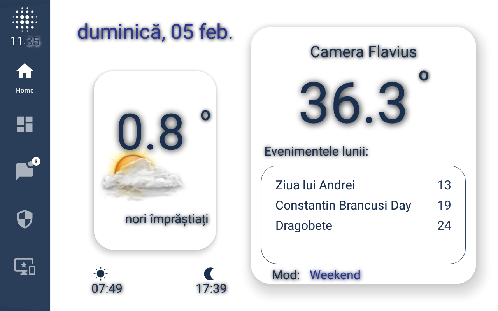
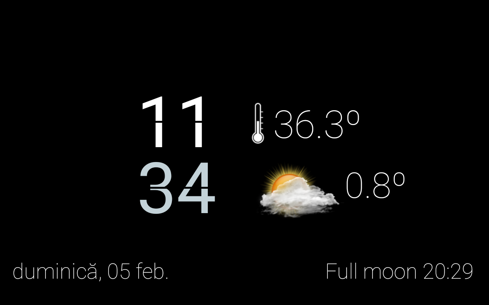

New updates for flaON
A few new updates for my flaON system, starting with the raspberry PIs and finishing with the android app that's running on my wall mounted tablets.
For a long time I was looking for a suitable gateway for my smarthome system. I've tried many very known or important gateways, like openHAB, home-assistant, nymea, gladys, domoticz or candlesmarthome, but none of them have no impressed me like the webthings.io have.
Smarthome gateway
So, after many tries and tests I've been finishing looking for a smarthome gateway and started using the mozilla's webthings.io gateway.
Why webthings.io?
Because its minimalistic design, good stability and security, easy remote access, customizable configuration by code, good implementation for IOT and MQTT. I already can create things and adapters, but the most important, the entire flaON system works as a IoT interconnected things system.
The raspberry PIs
A couple of changes were made to the raspberry PIs in order to obtain a more clean IoT structure.
On my main raspberry "192.168.1.10" (Raspberry Pi 4 Model B Rev 1.4) are installed the following services & servers: mosquitto broker, nodered service, plex server and delunge service.
On my second raspberry "192.168.1.12" (Raspberry Pi 3 Model B Rev 1.2) is installed the webthings.io server remotely accessible.
The third and the oldest raspberry is used for security and testing.
The android flaON app
The android app has a new polar-white theme.
Inspired by a image from Pinterest website, the android app has a polar-white theme that looks more readable. Also a NavigationRailView was added to the left of the screen for a better navigation. This NavigationRailView has a customizable badge, in my case used for logs/errors notification.

The calendar script has a moon phase feature added, that is displayed on the weather fragment and daydream screensaver also (see the image below):

Issues
- Since I migrate to NavigationRailView and fragments, there is a small bug displaying the weather's image on the home screen. Still have no ideea how to fix it. :P
- Viewing the surveillance cameras on my tablets still gives me headaches. Got the camera streams but the loading time is big and the stability is weak;